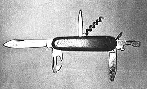
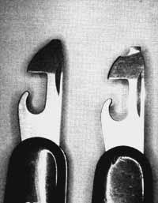
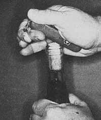

In MOTHER NO. 41, author/mechanic Doug Richmond ("The Homesteader's Toolbox", pages 82?84) gave us some expert advice on how to buy hand tools. Now Doug's back . . . this time to tell us all about:
I'll admit I laughed long and loud the first time I saw a Swiss army knife. To me (and mind you, I've been using pocketknives ever since I was old enough to wear pants with pockets) the very sight of all those gadgets protruding from a single handle was just too much! Besides which, the blades were made of stainless steel, and "everybody knew" that stainless?because of its inability to take and hold a proper edge-was suitable only for household cutlery. And, besides that. . . the knife in question had a chintzy-looking red handle that made me think it'd been made especially for the punchboard premium trade.
Well, the passage of time has proven me wrong on all counts. Because today, the Swiss army knife is probably the most popular folding knife in these United States . . . and deservedly so. It is, after all, more than just a pocketknife: It's a pocket-sized assortment of tools!
Swiss army knives come in many models, with various combinations and quantities of attachments. The simplest versions have as few as five accessories and weigh only a couple of ounces . . . while the grand deluxe models may sport up to seventeen fold?out tools and weigh more than a quarter pound!
My favorite Swiss army knife is the relatively simple Camper model, which has two blades, a corkscrew, a can opener, a bottle opener, and a "punch" (actually a single?blade reamer). It also features a lanyard loop, but I've never used this accessory (nor have I seen anyone else use it). All-up weight: a smidgen over two ounces, or roughly half the heft of a super deluxe model.
Another?and very similar Swiss army knife?comes with a Phillips screwdriver in place of the corkscrew . . . a substitution I dislike for two reasons. First, unless the Phillips is used with adequate pressure in clean screws of the proper size, the tip will unavoidably be damaged. Second, it's impossible ?for all practical purposes?to repair a damaged Phillips bit by regrinding (as is customarily done with ordinary screwdrivers). Let's just say, then, that I much prefer a corkscrew which works to a Phillips that doesn't (or that soon won't)!
You'll find that Swiss army knives-even of identical design-vary considerably in price. For example: Four years ago my friendly local hardware dealer was selling Camper?style Swiss army knives for $11.40 each. That seemed a bit much at the time, so I stopped by the Sierra Designs store on my next trip into town and bought the identical model for a more reasonable $7.75. (The selfsame knife is currently available for $70.75 postpaid from L. L. Bean, Inc., Freeport, Maine 04033. Specify the "Camper model Swiss army knife, stock no. 6219-C".?THE EDITORS.) The moral: It pays to shop around.
If possible, visit a store where you can try the action of several knives. The effort required to open and close blades differs widely from one knife to the next, and you definitely do want a tool that opens easily. (The stainless steel in a Swiss army knife doesn't "wear in" very quickly. If it's stiff when new, it'll probably always be stiff!)
Caution: Beware of cheap (and not-so-cheap) imitations. The kind of knife you want?the one that lasts like a mother-in-law's curse-always bears the name Victorinox on the large knife blade near the bolster. Accept no substitutes!
Many S.A.K. models feature combination screwdriver/can opener attachments. As they come from the factory, these accessories are next to useless, however, because their rounded corners cause the screwdriver to ride up and out of screw slots, or ruin the screws, or both. The solution: Simply regrind the tip to a proper (i.e., squared off ) screwdriver shape, as shown in Photo 2. This can be done in a few minutes on any bench grinder.
I regard the can opener portion of the accessory, by the way, as an invention of the devil and prefer?instead?to open cans with the larger of the tool's two knife blades. (It's quicker and neater.)
Any knife is useless unless it's kept sharp . . . and the S.A.K. is no exception.
You'll find that the stainless steel blades of a Victorinox?which are quite thin (as knife blades should be)?will take and hold a good edge, but do require more time to sharpen than the softer carbon steel blades of the average pocketknife. For this reason, you might want to do your honing on an emery wheel. The usual advice, of course, is never to sharpen cutlery on a wheel, since it's easy to overheat (and thereby take the temper out of) the steel . . . but, if you grind slowly and carefully-creating almost no sparks, and never letting the metal become too hot to touch-you can sharpen your S.A.K. this way without hurting it in the least.
Or, in a pinch, you can sometimes file the blades sharp. (Be warned in advance, though, that some files simply can't cope with the tough steel of a Swiss army knife. And anyway, the thin blades are difficult to hold in the average vise.) And if you rely on the old standby?a whetstone?for putting an edge on your Swiss army knife's blades, remember to hold the cutting edges at a flatter angle to the stone than you ordinarily hold the blades of a penknife.
When a whetstone isn't available (such as on a backpacking trip), you can substitute emery cloth . . . the sort that comes rolled up like hair ribbon. (A 180-grit cloth is best, though 120-grit will do in a pinch.) All you have to do is lay a short piece of the material on a hard, flat surface and then use it as you would a stone. Most garages and shops carry furlongs of this cloth, and quite often a shop will donate a couple feet of it for the good of the Order.
To keep your knife in tiptop shape, touch up its blades between regular sharpenings. I use a butcher's steel for this little job when I'm at home, and the handle of a crescent wrench down at the shop.
Because stainless steel isn't subject to rust, most S.A.K. users never oil their knives . . . and thereby do themselves a disservice. A properly lubricated Victorinox is always easier to open than an unoiled one. (This can make all the difference in the world when you have wet hands and/or water-softened fingernails.)
I always use a premium-quality motor oil (which I get from "empty" 10W-40 cans at the local service station) on my knife, but I suspect most any kind of oil will do. Just be sure to lubricate all the hinges (my Camper has three).
As for how often you should oil the tool, I'd say once a month is plenty (unless, of course, you accidentally run the knife through the washer or drop it in a pail of cleaning solvent).
At $10 to $30 apiece, Swiss army knives are a mite more expensive than the common drugstore-variety penknife . . . but then, you're not likely to wear out a Victorinox.
I used my previous Swiss army knife a total of five years. Four of those came after an episode in which I lost the knife along a road . . . only to find it after it'd been run over by several pickup trucks. (Had it not been for the bright red handle, the knife might still be lying-unnoticed?on that same road today!) One side of the tool's handle was cracked in that little episode . . . but the knife's utility wasn't impaired in the least.
I finally ended up donating the run-over knife to a friend for general office use, after the breaks in the handle had spread to the point where they were causing undue wear and tear on my trouser pockets. In the meantime, though, I bought another Victorinox, which is now in its fourth year of service and still as good as new. (No, better than new: Now at least the screwdriver blades are shaped correctly!)
A final word of advice: If you buy one of these miniature tool kits, by all means have your name engraved on the handle. (I say "handle" because the stainless steel blades don't take engraving too well.) There are still a few honest souls left in the world who'll return a tool to its rightful owner . . . even if that implement happens to be a beautiful, red?handled Swiss army knife!
|
 PHOTO BY DOUG RICHMOND |
 |
 |